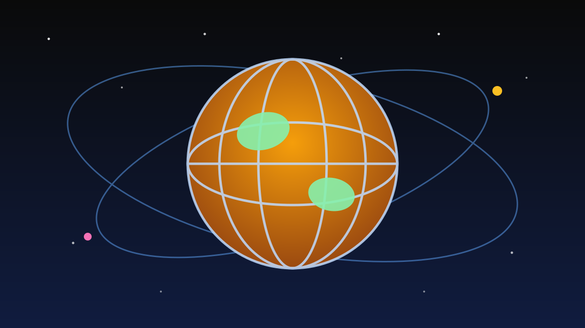

1 / 6

🌍 DUNIA
Bandara Riyadh Diserang, 12 Tewas
Serangan paling mematikan ke Arab Saudi dalam lebih dari 10 tahun — KBRI memastikan tidak ada WNI yang meninggal. Geser buat detailnya →
2 / 6
💥
Apa yang terjadi?
Pada Sabtu sore 10 Oktober 2026, kelompok Houthi dari Yaman melancarkan serangan rudal dan drone ke Bandara Internasional King Khalid di Riyadh, ibu kota Arab Saudi.
Otoritas penerbangan sipil Saudi (GACA) mengonfirmasi 12 orang tewas dan 309 lainnya luka-luka, beberapa dalam kondisi kritis. Bandara sempat ditutup sementara untuk evakuasi dan pemeriksaan keamanan.
3 / 6
🕊️
Siapa korbannya?
Dari 12 korban tewas, empat adalah warga Saudi, dua warga Bangladesh, dan masing-masing satu warga AS, Mesir, Yordania, Suriah, Palestina, dan Sudan.
Koalisi pimpinan Saudi mengecam serangan ke bandara sipil ini sebagai kejahatan perang dan berjanji akan membalas sesuai hukum humaniter internasional.
4 / 6
🇮🇩
WNI aman?
Kementerian Luar Negeri memastikan tidak ada WNI dalam daftar korban meninggal. Namun KBRI Riyadh masih menyisir rumah sakit untuk memastikan tak ada WNI di antara yang luka.
Kemlu juga menyiapkan rencana kontingensi perlindungan bagi sekitar 581.000 WNI yang menetap dan berziarah di Arab Saudi.
5 / 6
⚠️
Eskalasi belum selesai
Sehari setelah serangan, Houthi memperingatkan maskapai dan penumpang agar menghindari bandara-bandara Saudi — kecuali bandara Makkah dan Madinah.
Presiden AS Donald Trump mengaku sedang mempertimbangkan keterlibatan Amerika dalam respons Saudi. Ketegangan Timur Tengah pun makin panas, dan harga minyak dunia ikut naik ke atas US$106 per barel.
6 / 6
🤔
Efeknya ke lo apa?
Kalau lo atau keluarga ada rencana umrah atau transit lewat Saudi, pantau terus info resmi Kemlu/KBRI dan kabar maskapai — jadwal bisa berubah sewaktu-waktu.
Secara tidak langsung, konflik ini bikin harga minyak naik, dan itu ujung-ujungnya ngaruh ke ongkir dan harga barang di sini. Jadi nggak sekadar berita jauh-jauh, valid buat dicermati.